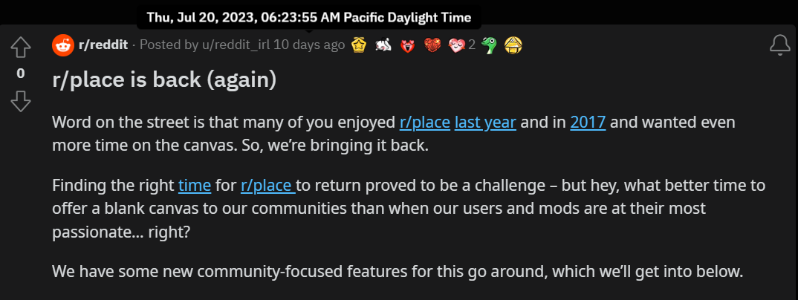
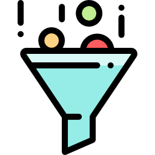
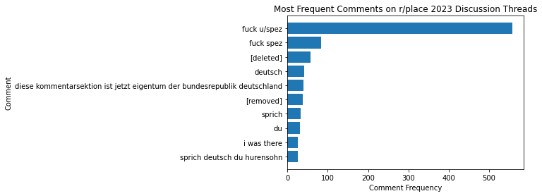

r/place is a social experiment where users place pixels on a virtual canvas.
As described by the subreddit, "[individually] you can create something.
Together you can create something."
(Source: r/place Community Statement)
First released as an April Fool's joke in 2017, it would return due to its
lasting popularity on April 2022 and July 2023.


2023 Reddit API Controversy
On July 1, 2023, Reddit changed its API pricing from $0 per 1000 API calls to $0.24
per 1000 API calls. The Reddit community's response was very negative, as the resulting
high operation costs forced popular third-party apps to shut down (e.g., Apollo App).
Therefore, when r/place returned on July 20, 2023, many users were still angry
at Steve Huffman, the CEO of Reddit. On the r/place canvas, numerous people
wrote "F*** u/spez", a reference to the CEO's Reddit username.
For more information, the Reddit announcement about the API price increase and the
Wikipedia article on the subject have been listed below.
Tracking Public Opinion on r/place 2023
The purpose of this project is to determine whether the Reddit community viewed r/place 2023
as generally positive, mixed, or generally negative. Was the critical backlash from a vocal
minority or did this sentiment reflect the greater community?
On official posts made by the Reddit admin u/reddit_irl during r/place 2023, I used a
web scraper to collect 8573 comments. However, since Reddit uses rate limiting to
discourage web scraping, there were some modifications made to collect these comments.
Instead of using requests and BeautifulSoup to scrape comments from a URL, I
pre-downloaded .html files of the posts, and extracted the comments from these
files. However, the caveat to this approach is that .html file downloads from
Reddit pages can only save up to 500 comments, which was a concern as many
threads had thousands of comments.
As a compromise, the .html files store the "Top" 500 comments, which sorts
comments based on how much they were upvote count, which is the Reddit
equivalent of the like count. The CSV file containing all comments can be
found on my Github page.


Analyzing the Comments
Prior to loading the sentiment analysis model, I extracted the ten most popular comments
from the official r/place 2023 discussion boards. From the bar chart, we can determine
that many users dislike Steve Huffman -- better known as his username u/spez on Reddit --
with the numerous "F*** u/spez" and "F*** spez" comments. Also, since half of the ten
most popular comments are in German, we can find that r/place has a massive
German userbase.
For this project, I used the bertweet-base-sentiment-analysis model to classify comments
as positive, neutral, or negative. The model reported that an astounding 47.4% of the
comments are neutral, while 40.5% of the comments are negative! In contrast, only
12.1% of the comments are positive. This suggests that the general sentiment of the
r/place 2023 was generally negative!
To better gauge sentiment on r/place 2023, I plan on separating English and German comments,
and letting a German-based NLP model evaluate the German comments. The sentiment analysis
model generally labeled German comments as neutral, and utilizing this approach can
lead to more accuract results.
Source Code
All the code used for this project can be found on my Github page!
{kind=link}